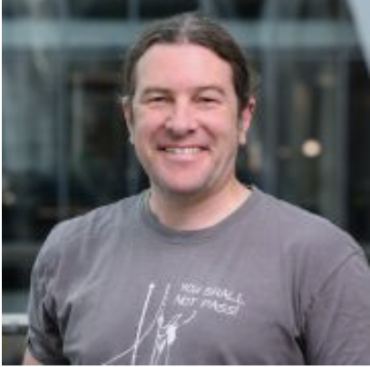
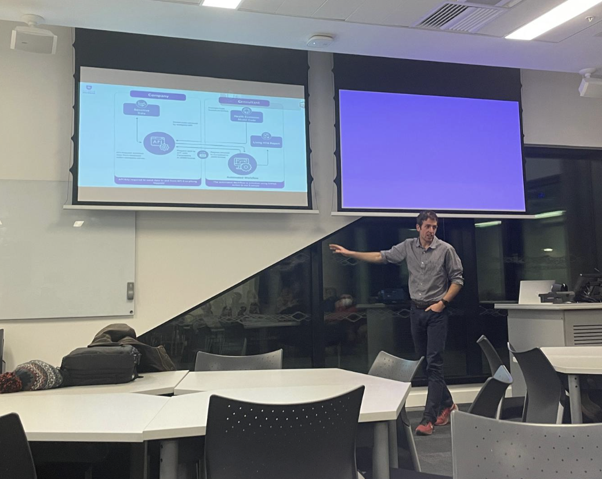

Neil Shephard, co-organizer of the Sheffield R User Group in Sheffield, United Kingdom (also on fosstodon), recently spoke to the R Consortium about his journey from Genetic Epidemiology to Research Software Engineering with R. He also discussed the revival of the Sheffield R User group and the challenges of organizing inclusive and hybrid events. Neil also highlighted the group’s successful participation in Hacktoberfest and shared insights into his current R projects, including developing tools for thyroid cancer prediction and deploying Shiny applications.

Please share your background and involvement with the RUGS group.
I have a background in biology. I studied zoology and genetics at the undergraduate level and then pursued a master’s degree in genetic epidemiology, focusing on identifying genes involved in human diseases. Specifically, I worked on complex diseases such as rheumatoid arthritis and related autoimmune diseases initially and breast cancer. During my master’s program, I was taught programming and learned some C, although that was quite a long time ago, around 25 years ago. While I never really took to C programming, I was also introduced to the statistical package Stata, which I found very user-friendly and appreciated its strong community support.
As time passed, I began to hear more and more about R. This was around 2000, a few years after R was first released. One of the things I had started doing was writing literate documents in LaTeX. I would write a LaTeX document, and Stata could output tables to LaTeX, which I could then include in my document and render to PDF. I found this a much more efficient way to work reproducibly than traditional word processors and spreadsheets.
I was exploring R and discovered Friedrich Liesch’s package Sweave, which interweaved LaTeX and R code. It was really the precursor to RMarkdown. I also started using Linux as my operating system and became interested in the free open source software movement.
Around 2004 I made a conscious choice to switch from Stata to R because of its open source licensing and extensibility. While Stata allowed me to write my functions and modules, I found R more open as it isn’t owned by a company, and I didn’t need a license, which I typically relied on my employers to provide.
I decided to invest my time learning R for all my work because it would benefit me in the long run, as I could take the knowledge and skills and use them anywhere. When I switched careers from genetic statistician to medical statistician in a clinical trials unit at the University of Sheffield, I continued using R, although I was in a minority, as most colleagues at the time used Stata or SPSS.
I continued using R and convinced a few others to join me. We supported each other, and around 2015 the SheffieldR user group was initiated by Anna Krystalli. I attended the meetings and found them really useful as they brought together people from the university and beyond who shared a passion for using R in their research, showing each other how they used R in their work. It was a great way to discover new features. I attended those meetings until around 2019, when I switched jobs to work for a startup tech company and switched to using Python and Java for work. Soon after, SheffieldR fizzled out due to lockdown in 2020.
After working for a tech company for a few years, I returned to the University of Sheffield as a Research Software Engineer, where I’m currently employed. This role has given me more opportunities to use R. I have been involved in a Python project from the beginning, but recently, I’ve also had the chance to work on a few R projects. I’ve missed the enjoyable and exciting R user group meetings that I used to attend.
I was asked to improve Sheffield’s RSE (Research Software Engineering) community. As part of this, I joined the open science community movement, an international initiative that began in the Netherlands. They had an incubator program to establish open science communities in local areas, and I enrolled in that program to start an open science community in Sheffield. I’m quite a practical person and like to take action and help others, so I resolved to revive the Sheffield R user group as I had found it so useful in helping me learn what could be done with R earlier in my career.
I briefly worked with Anna, who had started the SheffieldR group, but unfortunately, soon after I started to work with the RSE Team, she moved on and became an R consultant. Still, we had some overlap, and she was happy to share all the materials and the GitHub repository for the website with me. So, I took on the responsibility of organizing the group. I rewrote the website and switched it from R Markdown to Quarto to learn more about using Quarto, which had just been released. It wasn’t too difficult since the languages are pretty similar.
 Sheffield R User Group April 2024 Meetup “Profiling and Optimising your R code,” Speaker: Dan Brady, Research Software Engineer, University of Sheffield.
Sheffield R User Group April 2024 Meetup “Profiling and Optimising your R code,” Speaker: Dan Brady, Research Software Engineer, University of Sheffield.
I was joined by Grace Accad from the Data Analytics Service at the University of Sheffield to organize SheffieldR. She had been involved in R ladies and attended other R user groups, and I’ve been very grateful to her for her support and help in sharing the workload.
We have been hosting Sheffield R user group events for over a year, and they have been quite successful. We aim to hold the events every month during term time. I presented at our initial reboot session showing how to use Quarto and GitHub pages to put slides online, but we have been fortunate to find other speakers since then. However, Grace and I are primarily responsible for organizing and setting up the website and booking rooms. It’s not too demanding, but that’s my primary role in the group.
Can you share what the R community is like in Sheffield?
 Sheffield R User Group January 2024 Meetup “Automating Health Economic Evaluation with R,” Speaker: Robert Smith, Dark Peak Analytics.
I only have a little industry experience, having only worked for one company. However, I think R is more academic, although that is changing. In Sheffield, the company I worked for had a research department with only two people. So, at least in Sheffield, R is used in the industry. The Sheffield R user group aims to bring together people who use R in the area to create a community where they can ask questions and help each other. A data science learning community in Sheffield used to be more R-oriented but now includes people using pandas. I like that community as well.
I strongly believe in the importance of connecting with people in person. The networking effect is natural and very beneficial. Building these connections and networks online while possible is more challenging, so I am focused on creating a local group to foster this. Most participants are from the University of Sheffield. However, there are also individuals from Sheffield Hallam University and outside academia, such as Simon Rolph from the UK Centre for Ecology and Hydrology, who gave an excellent talk on the targets package. We’ve also had talks with Robert Smith and Wael Mohammed of Dark Peak Analytics.
One of my challenges is that I have a daughter, so I usually need to be home in the afternoons to take care of her. I appreciate that attending events in the evenings isn’t possible for everyone. Finding a suitable time for everyone is difficult. If we have meetings at lunchtime, we get a lot of university attendees, but only a few from farther away because they would have to travel. You can please some of the people sometimes, but you can’t please all the people all the time.
Your group recently hosted Hacktoberfest events. Can you share more about the topic covered? Why this topic?
Hacktoberfest celebrates open source software and encourages people to find their favorite open source project to contribute to. Our first meeting was on October 4th, and then we had one every other Friday throughout October.
The main objective was to help people get comfortable contributing to open source software, especially those who use R but may not be familiar with version control using Git and GitHub. In the first session, I used material from my job as a research software engineer, where I’ve been teaching a course Anna developed on using Git and GitHub for the past year or two. This course covers the basics of version control and includes a collaborative exercise using a GitHub repository.
Participants learned how to fork the repository, make changes locally, push their changes, and create pull requests. The following three weeks were dedicated to providing support, where others and I with experience in version control and using R were available to assist others. The goal was for people to help each other during this time and not rely solely on me or my colleagues as organizers, as some individuals may have more knowledge than others. It was great to see everyone coming together to support one another, as some people may have more expertise in specific areas than I do.
Any techniques you recommend using for planning for or during the event? (Github, zoom, other) Can these techniques be used to make your group more inclusive to people that are unable to attend physical events in the future?
I have a GitHub issue template in place to help organize our meetings. I use GitHub to plan events because my memory is terrible. I’d likely forget something important if I didn’t have everything written down. Whenever we plan an event, we create a GitHub issue and assign it to me or Grace. It’s a checklist of tasks such as booking a room, setting dates and times, confirming speakers, obtaining consent for photography during the event, and listing places to advertise the event. This checklist helps us keep track of everything that needs to be done for each event.
The Sheffield R user group used to meet in a local pub. However, when we restarted the events, we decided that using more neutral spaces would be more inclusive, so we use university buildings now. We want to ensure everyone feels welcome, so we choose accessible venues for people with disabilities. It’s important to me that everyone can attend without any barriers.
We also run hybrid meetings, which I find challenging. When I have a group of people in the room, I naturally tend to speak to them. I have to remind myself to pay constant attention to the online participants. It’s helpful to have another organizer keeping an eye on the online side of things when people raise their hands. Despite the challenges, we continue with hybrid meetings because they’re a good way of allowing people to attend if they can’t make it in person.
Please share about a project you are currently working on or have worked on in the past using the R language. Goal/reason, result, anything interesting, especially related to the industry you work in?
I’m working on a project with a PhD student trying to improve thyroid cancer prediction. When he approached me, he used SPSS for his analysis because that’s what one of my old colleagues had taught him. From now on, I encouraged him to switch to using R for all his work, and I’ve helped him set up version control for it.
He has learned to write Quarto documents with embedded R code to write the manuscript he wants to create. This has been very useful. He has also learned how to use a multiple imputation package that he hadn’t used before to summarize the results and check their consistency with the observed data. At one point, the PhD student and his supervisor wanted to create a website where people could enter various characteristics about a patient and receive a risk profile indicating whether the lumps in their thyroids were likely to be malignant. To achieve this, he revisited his knowledge of Shiny to get the website up and running. However, he was aware that it might be something they wanted to put into production. Consequently, he discovered the Golem package, which appears to be a handy tool for taking Shiny and developing it more rigorously for deployment to production. This has been the main focus of his recent work with R.
I’ve been using Quarto and R for my blog and some small tasks lately. I’ve written several posts about pre-commit for linting code, which is really useful. I’m overdue writing one on how to use the lintr package and should find time to investigate the newer flint package too.
I also had a project where the researchers used R and had a lot of code. I convinced them to organize their code into a more structured package format. I found DevTools and the usethis package to be very helpful for that. At the same time, I set up the package repository to use linter to ensure that all coding standards were followed in case they ever decided to release it to CRAN.
I feel like a jack of all trades because I use Python, R, and a bit of Bash. I know a little about everything, but I’m not an expert at any one thing!
How do I Join?
R Consortium’s R User Group and Small Conference Support Program (RUGS) provides grants to help R groups organize, share information, and support each other worldwide. We have given grants over the past four years, encompassing over 75,492 members in 39 countries. We would like to include you! Cash grants and meetup.com accounts are awarded based on the intended use of the funds and the amount of money available to distribute.